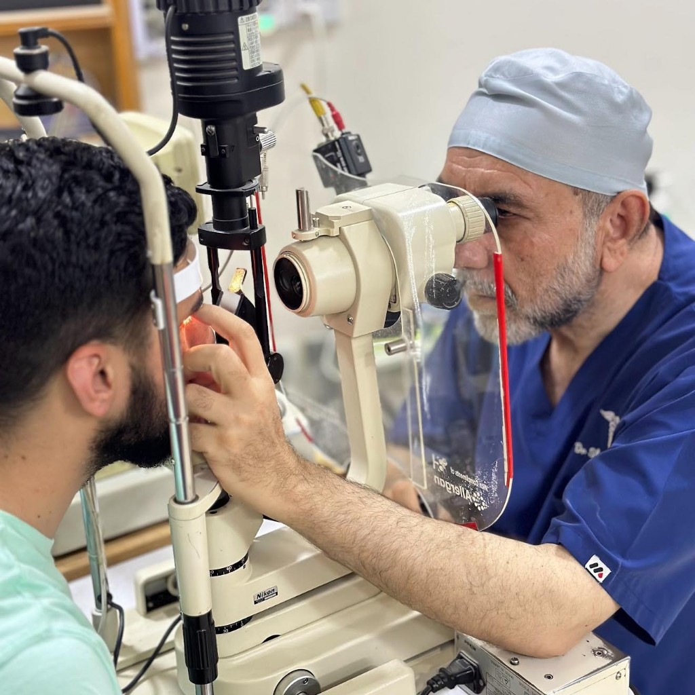
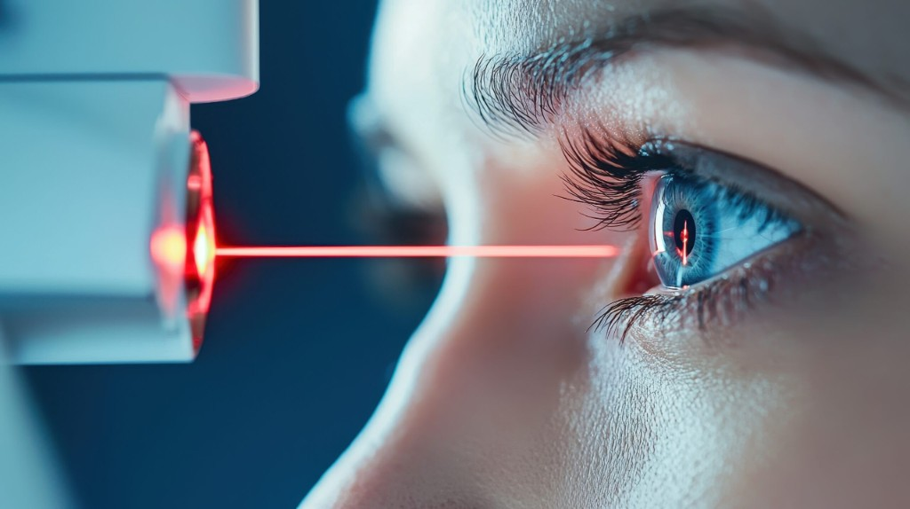
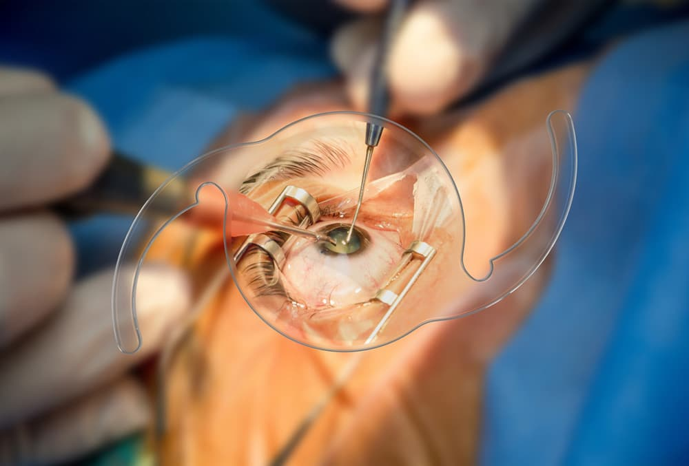
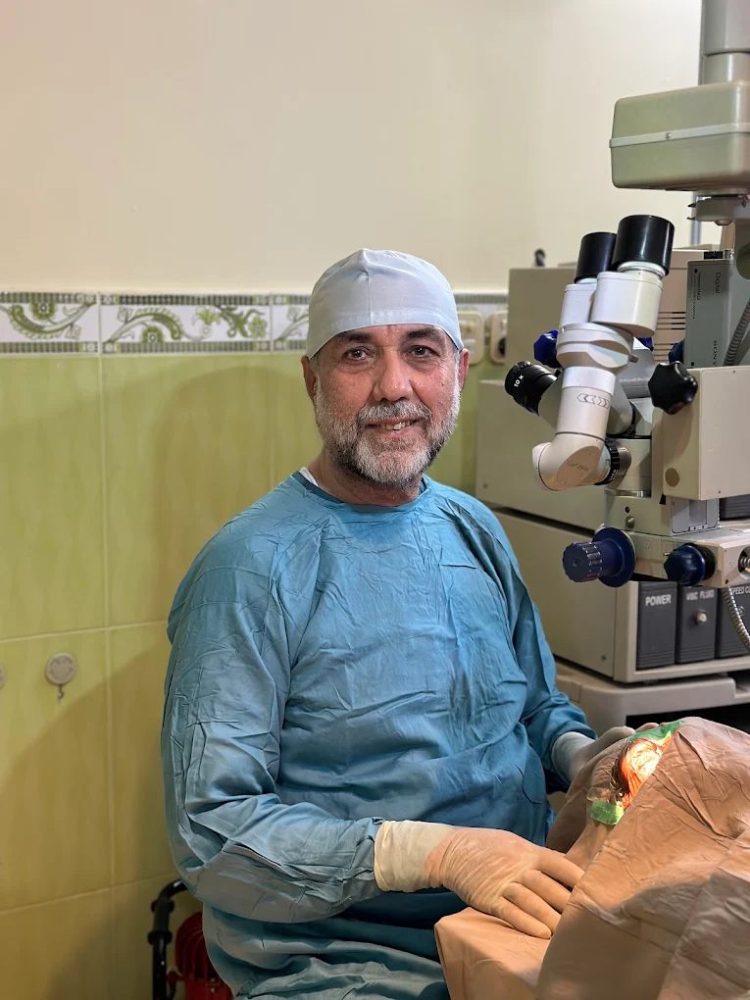
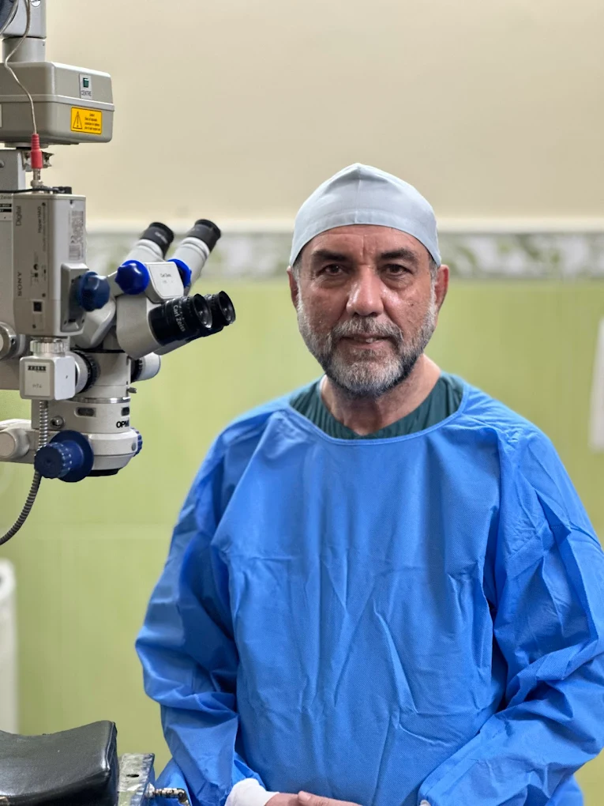
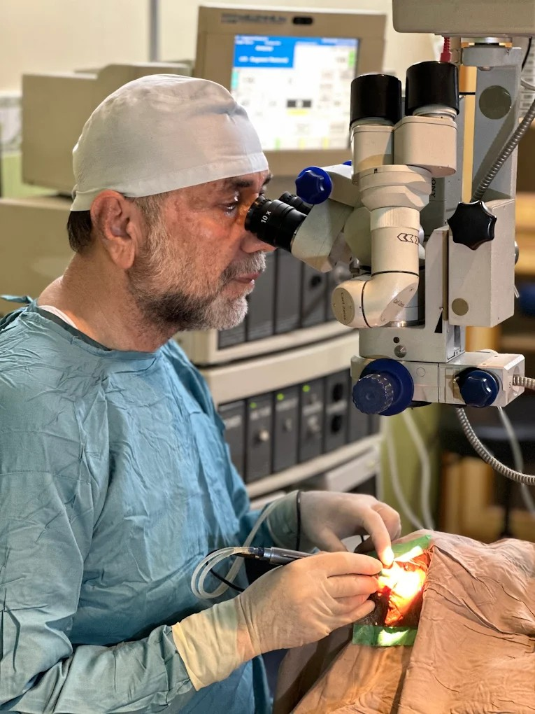
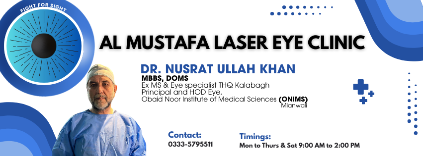
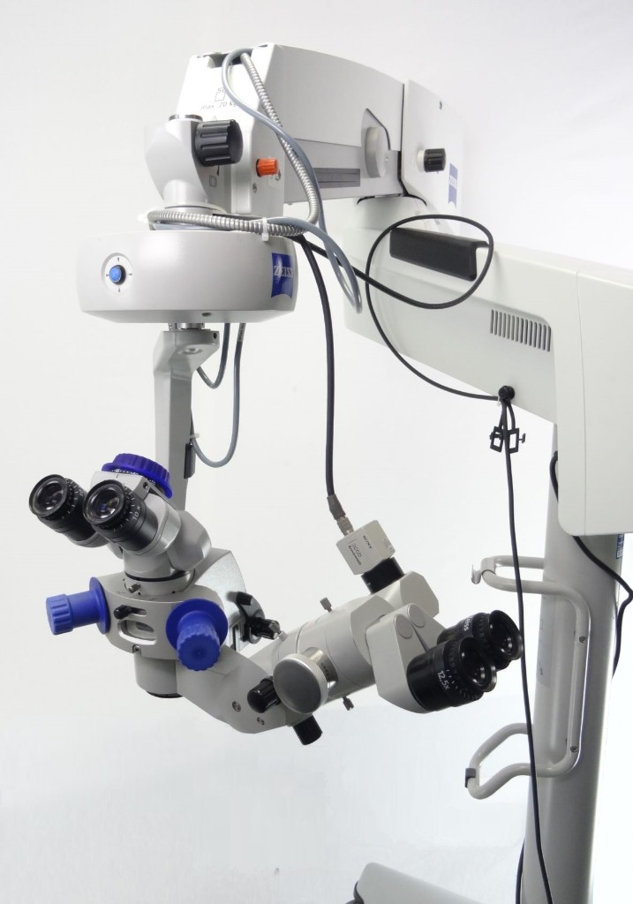
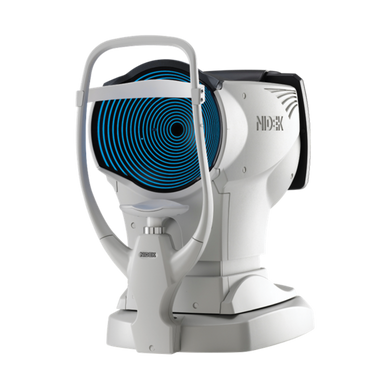
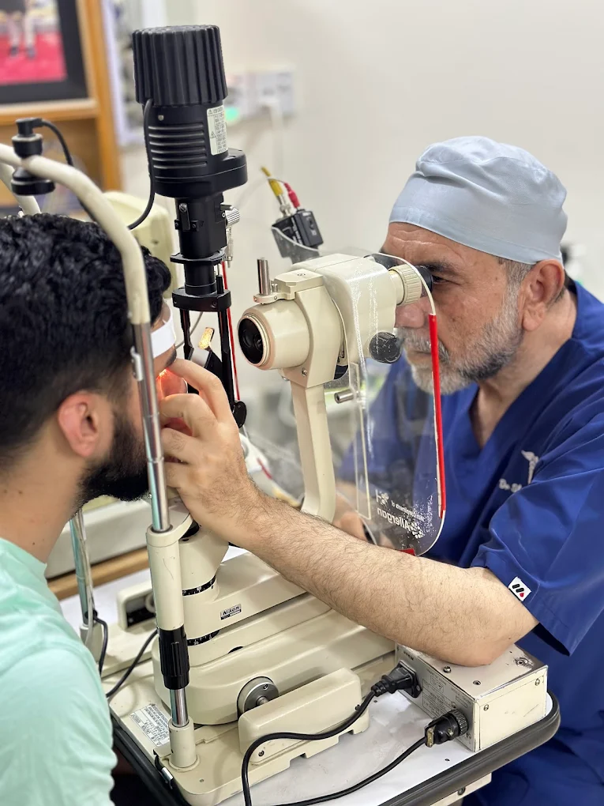

Eye check-ups for study and screen use
Long study hours or excessive screen time can strain your eyes. Get a quick check-up to keep your vision clear and comfortable.
Our specialities
Advanced eye treatments designed around your needs — from vision correction to medical eye care, all under expert supervision.

Long study hours or excessive screen time can strain your eyes. Get a quick check-up to keep your vision clear and comfortable.

Tired of wearing glasses every day? Our advanced laser vision treatment helps you achieve clear sight without dependence on spectacles or contact lenses.

Cataract surgery replaces the cloudy lens in your eye with a clear artificial lens—restoring sharp and bright vision for everyday life.
Eyelid correction surgery improves both your vision and appearance—helping you see better and feel more confident.

Our clinic utilizes state-of-the-art microsurgical technology to perform precise, minimally invasive procedures that restore visual clarity. We employ high-definition imaging to ensure maximum surgical accuracy and the highest standards of patient safety. This modern approach is dedicated to providing effective results and a fast, comfortable recovery for every patient.
Why choose us
Al-Mustafa Laser Eye Clinic combines advanced technology with a patient-first approach — led by Dr. Nusrat Ullah Khan. We invest in precision diagnostics and clear communication at every step.
Modern platforms for refractive, cataract, and medical eye care — calibrated for accuracy and safety, with protocols matched to international standards.
Care directed by an experienced eye specialist, with emphasis on candidacy, informed consent, and follow-up you can rely on.
No hidden costs, no pressure. Your initial consultation outlines options, risks, and costs so you can decide with confidence.
Our doctors
Clinical leadership at Al-Mustafa Laser Eye Clinic — dedicated to preserving and enhancing vision for families across the region. Serving the people of Mianwali with dedication and trust for over 30 years.
Senior Consultant Ophthalmologist
Dr. Nusrat Ullah Khan
MBBS, DOMS
Principal & Head of Department — Eye
Obaid Noor Institute of Medical Sciences (ONIMS), Mianwali



More photos: clinic Facebook album.
Technology
Advanced technology designed to ensure safer procedures, accurate diagnosis, and better visual outcomes for every patient.
Featured technology
Our clinic features the Zeiss OPMI Visu surgical microscope, providing unparalleled clarity and detail for the most delicate eye procedures. This advanced system uses high-definition optics and motorized precision to ensure maximum safety and accuracy during cataract and retinal surgeries.


Corneal mapping
Advanced optical mapping technology that creates a detailed 3D map of your entire vision system. It detects subtle distortions causing glare, halos, or poor night vision — even when your basic prescription seems normal. Essential for safe LASIK surgery planning and dry eye assessment.
Clinical examination
This is where care gets personal. Sitting face to face, Dr. Nusrat Ullah Khan uses our advanced slit lamp to examine every layer of your eye with precision — because your vision deserves more than a guess.

Patient info
Placeholder reviews — replace with verified feedback from your Facebook reviews or in-clinic testimonials.
★★★★★“Thorough examination and clear explanation of my options. The clinic feels organised and trustworthy.”
★★★★★“Professional team and calm environment. I appreciated the time spent on my questions before any procedure was discussed.”
★★★★★“We brought our child for a screening after seeing their community post. Reassuring care and practical advice.”
Contact
Request a consultation by phone or use the form below. Our team will confirm timing and any preparation you may need.
Fields marked conceptually as required for your front-desk workflow.
Al-Mustafa Laser Eye Clinic
Khan Zaman Street, Ballo Khel Road
Mianwali, Pakistan
Map is approximate (Ballo Khel Road area). Pin exact location after verifying on site.